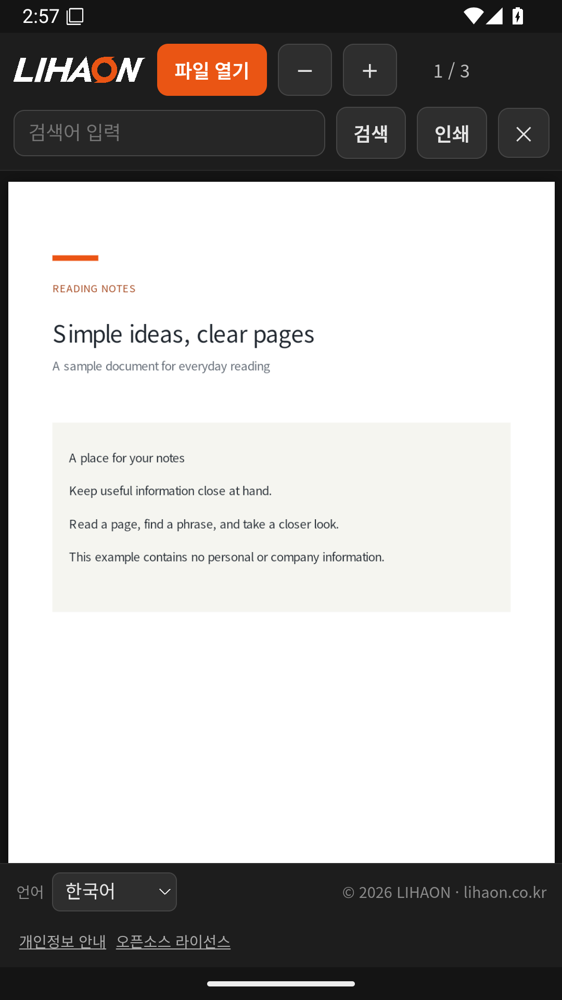

받은 PDF를 휴대폰에서
기기에서 파일을 선택하거나 다른 앱에서 열어보세요. 확대·축소와 페이지 이동, 최근 문서 다시 열기를 지원합니다.
광고와 회원가입 없이 사용하는 무료 PDF 리더.
iPhone과 Android에서 간편하게 시작하세요.
iOS 15.0 이상 · Android 7.0 이상
버전 2.0.0 기준 안내 · 주식회사 리하온 제작

기기에서 파일을 선택하거나 다른 앱에서 열어보세요. 확대·축소와 페이지 이동, 최근 문서 다시 열기를 지원합니다.
검색어를 입력하면 해당 단어가 포함된 페이지를 찾습니다. 문자 정보가 없는 스캔 PDF는 검색되지 않을 수 있습니다.
운영체제의 인쇄 기능을 이용합니다. 연결 가능한 프린터와 인쇄 서비스가 필요합니다.
실제 Android 앱의 정지 화면으로 만든 안내 영상입니다. 실시간 조작 녹화가 아니며, 기기에 따라 화면이 다를 수 있습니다. 음성 없이 볼 수 있습니다.
0:00 읽기 · 0:07 페이지 검색 · 0:14 인쇄 · 0:20 설치 QR
사진을 스캔한 PDF처럼 문자 정보가 없는 문서는 검색할 수 없습니다. 현재 앱은 OCR 기능을 제공하지 않습니다.
프린터가 보이지 않으면 기기와 프린터의 연결 및 운영체제의 인쇄 지원을 확인하세요. 회사 문서는 회사의 보안·인쇄 정책에 따라 사용하세요.
한국어·English·Español·हिन्दी·Tiếng Việt·नेपाली를 지원합니다. 앱의 언어 선택에서 변경하면 다음 실행에도 유지됩니다. 최근 기록 지우기는 앱의 최근 파일 참조·보관 사본을 정리하며 원본 파일은 삭제하지 않습니다.
이 페이지는 Android·iPhone용 PDF 리더 안내입니다. 모바일 앱은 읽기·검색·인쇄를 중심으로 제공하며, PDF 편집·병합·주석·OCR 기능은 제공하지 않습니다.
LIHAON PDF is a free PDF reader with no ads or sign-in. Open files, zoom, navigate pages, find pages containing text, reopen recent documents and print using your device's print service. Available in Korean, English, Spanish, Hindi, Vietnamese and Nepali.
Viewing and search run on your device. Cloud file providers and print services may process documents and use a network. Scanned PDFs without text cannot be searched. PDF editing and OCR are not included.
잘 안 열리는 문서가 있거나 불편한 점이 있다면 기기 종류와 사용 중인 언어, 문제가 생긴 순서를 알려주세요. 문서를 보내지 않아도 됩니다.
blue9236@gmail.com ↗